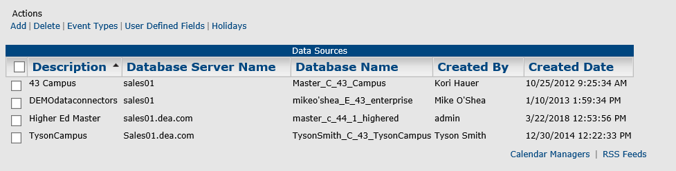
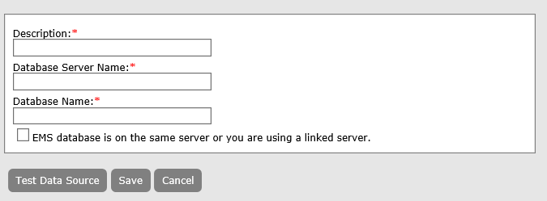
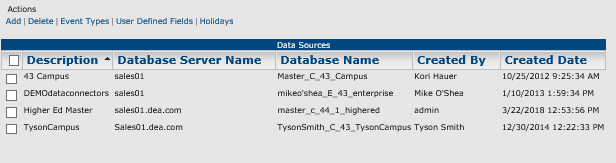
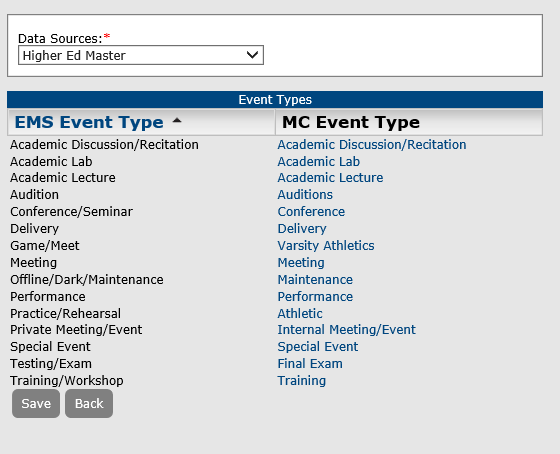
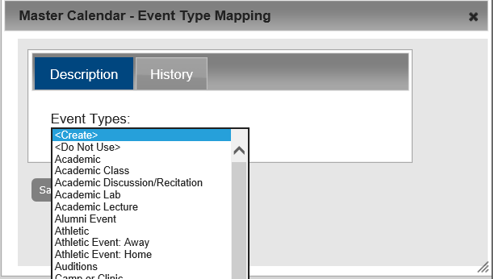
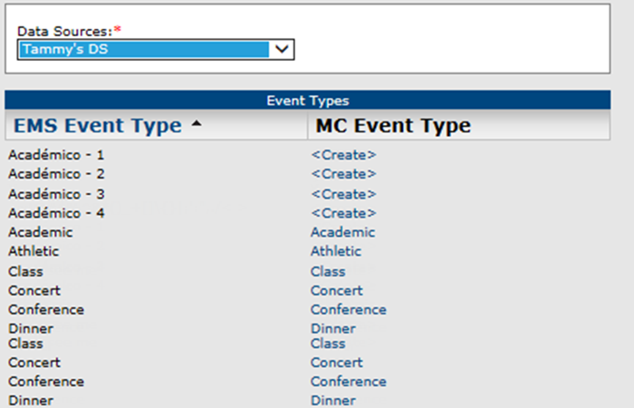
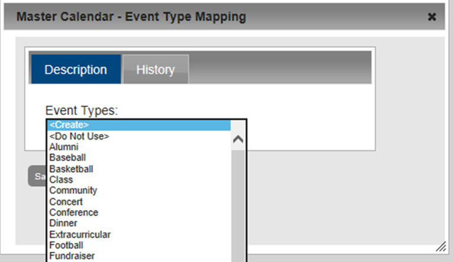
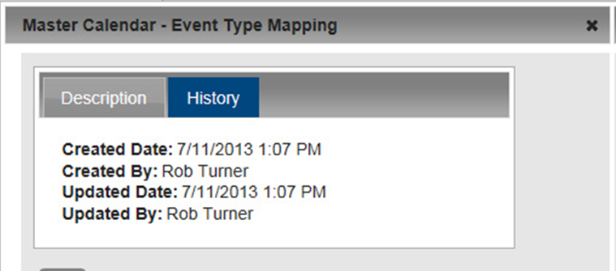
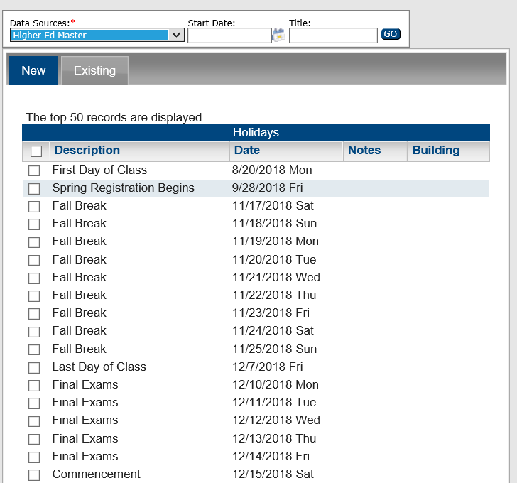
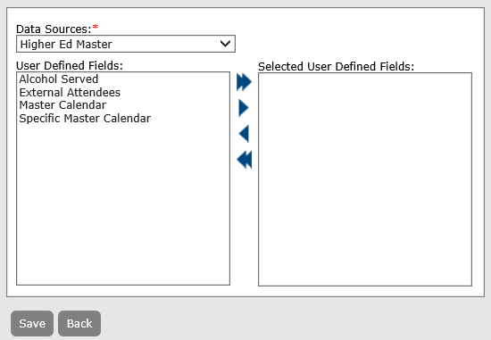

Data Sources consist of Event Types, Holidays, and User-Defined fields defined in your EMS implementation.
This topic will provide information that will allow you to:
In EMS Master Calendar, as the site administrator, you have the option of setting up event types and holidays (special dates) from “scratch;” however, if you are an existing EMS customer who uses one of the EMS products, such as Campus, Desktop Client, Enterprise, Professional, Legal, and so on, this means that you have already configured this information for your EMS application. Rather than creating these items from scratch, if your organization has purchased the optional module, Master Calendar Data Connectors, you can follow the steps in this topic to perform a one-time import of event types and holidays from your EMS application into Master Calendar. You can import event types and holidays from one or more EMS databases to one or more calendars in Master Calendar. Also, at the data source level, you can select a high-level view of your user-defined fields (UDFs) in your EMS database, and you can then run a connector to import one or more selected UDFs and their associated answers into your Master Calendar database. Managing data sources in Master Calendar consists of adding data sources, deleting data sources, importing the event types, importing the holidays, and selecting the UDFs that are to be imported. You can also view the history of event type mapping between your EMS database and your Master Calendar database.
See Also:
From the Admin Panel, navigate to Admin > Site Administration > Data Sources. The Data Sources page opens. This page lists all the currently available data sources in Master Calendar.

Under Actions, click Add. The Adding a Data Source page opens.

EMS database resides on the same server or you are using a linked server.
You can obtain the database server name and the database name by logging in to the EMS client and then choosing Select File > Change Database, or you can work with your local Database Administrator to obtain the correct server name and database name.
When you a delete a data source, all connectors that use this data sources and associated events are deleted.
From the Admin Panel, navigate to Admin > Site Administration > Data Sources. The Data Sources page opens. This page lists all the currently available data sources in Master Calendar.
Click OK in the message. The Data Sources page is refreshed to show the remaining, if any, data sources in Master Calendar.
Deleting a Data Source and its associated events cannot be undone.
When you are importing event types from EMS into Master Calendar, you have three options. You can:
From the Admin Panel, navigate to Admin > Site Administration > Data Sources. The Data Sources page opens. This page lists all the currently available data sources in Master Calendar.

Select the data source from which you are importing the event types and then, under Actions, click Event Types. The Event Types page opens. This page lists all the currently defined event types for the selected data source. It also shows the mapping for each event type, or whether it has been set to “Do Not Use.”

If an EMS event type has not been mapped to a Master Calendar event type, and it has not been set to “Do Not Use,” then the “Create” option is displayed for it in the Master Calendar Event Type list.
For any of the unmapped EMS event types, click Create to open a Master Calendar dialog box. The Description tab on this dialog box lists all the currently active Master Calendar event types. The “Do Not Use” option is also displayed on this list. If you do not see the Master Calendar event type to which you want to map the EMS event type, either it has not been created, or it is currently inactive in Master Calendar. To add a new event type, or to activate a currently inactive event type, see “To add an event type” or “To activate an event type”.

The history for an event type mapping consists of the original creation date of the mapping, the name of the user who created the mapping, and the last date that the mapping was edited as well as the name of the user who last edited the mapping.
From the Admin Panel, navigate to Admin > Site Administration > Data Sources. The Data Sources page opens. This page lists all the currently available data sources in Master Calendar.
Under Actions, click Event Types. The Event Types page opens. This page lists all the currently defined event types for the selected data source.

Click the MC Event Type link for the mapping for which you are viewing the history. A Master Calendar dialog box opens. By default, the Description tab is the opened tab.

Click the History tab to open it and view the history for the selected mapping.

The term “holiday” is equivalent to the Master Calendar term “special date.”
From the Admin Panel, navigate to Admin > Site Administration > Data Sources. The Data Sources page opens. This page lists all the currently available data sources in Master Calendar.
Under Actions, click Holidays. The Holidays page open. By default, the New tab is the opened tab. This tab lists the records for up to the first 50 holidays that are defined in the selected data source and that have a date greater than or equal to the current day’s date.

From the Admin Panel, navigate to Admin > Site Administration > Data Sources. The Data Sources page opens. This page lists all the currently available data sources in Master Calendar.
Under Actions, click User Defined Fields. The User Defined Fields page opens. On this page, you see only those UDFs that have the Field Applies To: Reservation configured within the EMS database. You can find this information in the EMS Desktop Client by navigating to Configuration > Other > User Defined Fields.
